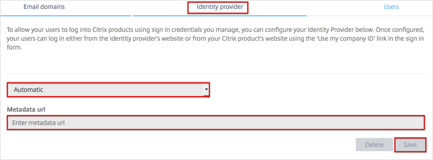

Log into the Organization Center, here: https://account.citrixonline.com/organization/administration/.
Navigate to the Identity provider tab and enter the following:
Select Automatic from the dropdown menu.
For the Metadata url, copy and paste the following:
Sign in to the Okta Admin app to have this variable generated for you
Click Save.

Done!
Notes:
IdP-initiated flows and SP-initiated flows are supported.
Just In Time (JIT) provisioning is not supported.
For SP-initiated flows:
Go to the appropriate Citrix online product login page:
For GoToMeeting: https://global.gotomeeting.com/.
For GoToWebinar: https://global.gotowebinar.com/.
For GoToTraining: https://global.gototraining.com/.
For OpenVoice: https://global.openvoice.com/.
For GoToAssist: https://app.gotoassist.com/.
Click on Use my company ID

Enter your email address, then click Continue.